Guía Esencial y concisa para dominar KiCad en el desarrollo exitoso de sofisticadas placas de circuito impreso.
Copyright
Este documento está protegido por Copyright © 2010 a 2015 de sus autores, mencionados a continuación. Puede distribuirlo y/o modificarlo bajo los términos de la GNU General Public License (http://www.gnu.org/licenses/gpl.html), versión 3 o posterior, o la Creative Commons Attribution License (http : //creativecommons.org/licenses/by/3.0/), versión 3.0 o posterior.
Todas las marcas mencionadas en esta guía pertenecen a sus legítimos propietarios.
Contribuidores
David Jahshan, Phil Hutchinson, Fabrizio Tappero, Christina Jarron, Melroy van den Berg.
Traducción
Antonio Morales <antonio1010.mr@gmail.com>, 2015-2016
Realimentación
Por favor dirija cualquier reporte de fallo, sugerencia o nuevas versiones a:
-
Acerca de la documentación de KiCad: https://github.com/KiCad/kicad-doc/issues
-
Acerca del software KiCad: https://bugs.launchpad.net/kicad
-
Acerca de la traducción del software KiCad i18n: https://github.com/KiCad/kicad-i18n/issues
Fecha de publicación
16 de Mayo de 2015.
1. Introducción a KiCad
KiCad es una herramienta software open-source para la creación de diagramas electrónicos y diseño de placas de circuito impreso. Bajo su singular fachada, KiCad incorpora un elegante conjunto con las siguientes herramientas de software independientes:
| Nombre del programa | Descripción | Extensión de Archivo |
|---|---|---|
KiCad |
Gestor de proyectos |
*.pro |
Eeschema |
Editor de esquemas (esquemas y componentes) |
*.sch, *.lib, *.net |
CvPcb |
Selector de huellas |
*.net |
Pcbnew |
Editor de placa de circuito |
*.kicad_pcb |
GerbView |
Visor de ficheros Gerber |
Extensiones gerbers usuales |
Bitmap2Component |
Crea componentes o huellas a partir de imágenes bitmap |
*.lib, *.kicad_mod, *.kicad_wks |
PCB Calculator |
Calculadora de componentes, tamaños de pistas, espaciado eléctrico, códigos de colores,y mas… |
Ninguno |
Pl Editor |
Editor de formatos de página |
*.kicad_wks |
|
Nota
|
La lista de extensiones de fichero no esta completa y solo contiene un subconjunto de los archivos con los que trabaja KiCad, lo cual es útil para un entendimiento básico de qué ficheros son utilizados por qué aplicación. |
KiCad puede considerarse lo suficientemente maduro como para ser utilizado en el desarrollo exitoso y mantenimiento de tarjetas electrónicas complejas.
KiCad no presenta ninguna limitación en cuanto al tamaño de la placa de circuito y puede gestionar fácilmente hasta 32 capas de cobre, hasta 14 capas técnicas y hasta 4 capas auxiliares. KiCad puede crear todos los archivos necesarios para la construcción de placas de circuito impreso, archivos Gerber para foto-plotters, archivos para taladrado, archivos de ubicación de los componentes y mucho más.
Al ser de código abierto (licencia GPL), KiCad representa la herramienta ideal para proyectos orientados a la creación de equipos electrónicos con estilo open-source.
En Internet, la casa de KiCad es:
1.1. Descargar e instalar KiCad
KiCad funciona en GNU/Linux, Apple OS X y Windows. Puede encontrar la mayoría de instrucciones actualizadas y enlaces de descarga en:
|
Importante
|
Las versiones estables de KiCad se publican periódicamente por la KiCad Stable Release Policy. Nuevas características continuamente se están añadiendo a la rama de desarrollo. Si desea tomar ventaja de estas nuevas características y ayudar probándolas, descargue el último paquete nightly build para su plataforma. Las Nightly Builds pueden introducir errores, pero el objetivo del equipo de desarrollo de KiCad es mantener la rama de desarrollo tan usable como sea posible durante el desarrollo de las nuevas funcionalidades. |
1.2. Bajo GNU/Linux
Se pueden encontrar Versiones estables de KiCad en la mayoría de los gestores de paquetes de las distintas distribuciones como kicad y kicad-doc. Si su distribución no proporciona la última versión estable, por favor, siga las instrucciones para versiones inestables y seleccione e instale la última versión estable.
Las versiones inestables se construyen a partir del código fuente más reciente. A veces pueden tener errores que causan la corrupción de archivos, generar malos gerbers, etc, pero en general son estables y tienen las últimas características.
En Ubuntu, la forma más fácil de instalar una versión inestable de KiCad es a través PPA y Aptitude. Escriba lo siguiente en una terminal:
sudo add-apt-repository ppa:js-reynaud/ppa-kicad
sudo aptitude update && sudo aptitude safe-upgrade
sudo aptitude install kicad kicad-doc-en
Bajo Fedora la forma más fácil de instalar una versión inestable es a través copr. Para instalar KiCad vía copr escriba lo siguiente dentro de copr:
sudo dnf copr enable mangelajo/kicad
sudo dnf install kicad
Como alternativa, puede descargar e instalar una versión pre-compilada de KiCad, o descargar directamente el código fuente, compilar e instalar KiCad.
1.3. Bajo Apple OS X
Las versiones estables de KiCad para OS X pueden encontrarse en: http://downloads.kicad-pcb.org/osx/stable/
Las versiones inestables se construyen a partir del código fuente más reciente. A veces pueden tener errores que causan la corrupción de archivos, generar malos gerbers, etc, pero en general son estables y tienen las últimas características.
Las versiones inestables pueden encontrarse en: http://downloads.kicad-pcb.org/osx/
1.4. Bajo Windows
Las versiones estables de KiCad para Windows pueden encontrarse en: http://downloads.kicad-pcb.org/windows/stable/
Las versiones inestables se construyen a partir del código fuente más reciente. A veces pueden tener errores que causan la corrupción de archivos, generar malos gerbers, etc, pero en general son estables y tienen las últimas características.
Para Windows puede encontrar las versiones de desarrollo en: http://downloads.kicad-pcb.org/windows/
1.5. Soporte
Si tiene ideas, comentarios o preguntas, o si simplemente necesita ayuda:
-
Visite el Foro
-
Únase al canal IRC #kicad en Freenode
-
Vea los Tutoriales
2. Flujo de trabajo en KiCad
A pesar de sus similitudes con otras herramientas de software para PCB, KiCad se caracteriza por un interesante flujo de trabajo en la que los símbolos de componentes y sus huellas en realidad son dos entidades separadas. A menudo esto es objeto de discusión en foros de Internet.
2.1. Resumen del flujo de trabajo en KiCad
El flujo de trabajo KiCad se compone de dos tareas principales: realizar el esquema y trazar la placa. Tanto una biblioteca de componentes como una biblioteca de huella son necesarias para estas dos tareas. KiCad tiene un montón de ambas. Sólo en caso de que no sean suficientes, KiCad también tiene las herramientas necesarias para crear otras nuevas.
En la imagen de abajo, se ve un diagrama de flujo que representa el flujo de trabajo KiCad. La imagen explica los pasos que necesita tomar, en qué orden. Cuando procede, se añade el icono por comodidad.
Para obtener más información sobre cómo crear un componente, consulte la sección de este documento Realizar símbolos de componentes en KiCad. Y para obtener más información acerca de cómo crear una nueva huella, consulte la sección de este documento Realizar huellas de componentes.
En la página siguiente:
Encontrará un ejemplo de uso de una herramienta que le permite crear rápidamente componentes para KiCad. Para obtener más información acerca de quicklib, consulte la sección de este documento Hacer símbolos con quicklib.
2.2. Anotado hacia adelante y hacia atrás
Una vez que se ha realizado un esquema electrónico, el siguiente paso es transferirlo a una PCB siguiendo el flujo de trabajo de KiCad. Cuando el proceso de diseño de la placa se ha realizado parcial o totalmente, puede ser necesario añadir componentes o nodos adicionales, mover elementos o mucho más. Esto se puede realizar de dos maneras: mediante anotado hacia adelante o hacia atrás.
La anotación hacia atrás es el proceso de enviar un cambio de diseño desde la PCB de nuevo a su esquema correspondiente. Hay quien no considera esta característica de particular utilidad.
El anotado hacia adelante es el proceso de enviar cambios en el esquema al diseño de la PCB correspondiente. Esta es una característica fundamental, ya que realmente no es deseable volver a realizar todo el diseño de la PCB cada vez que realice una modificación en el esquema. La anotación hacia adelante se discute en la sección Anotado hacia adelante.
3. Dibujar esquemas electrónicos
En esta sección vamos a aprender a dibujar un esquema electrónico utilizando KiCad.
3.1. Usando Eeschema
-
En Windows ejecute kicad.exe. Bajo Linux escriba kicad en una terminal. Ahora se encuentra en la ventana principal del gestor del proyectos de KiCad. Desde aquí tiene acceso a ocho herramientas de software independientes: Eeschema, Schematic Library Editor, Pcbnew, PCB Footprint Editor, GerbView, Bitmap2Component, PCB Calculator y Pl Editor. Consulte la tabla de flujo de trabajo para obtener una idea de cómo se utilizan las principales herramientas.
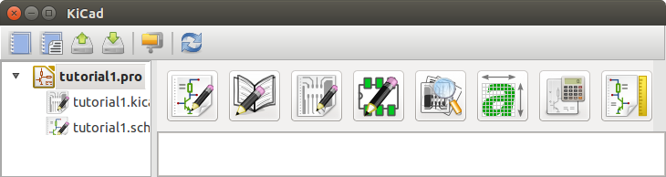 -
Cree un nuevo proyecto: Archivo → Nuevo proyecto → Nuevo proyecto. Asigne el nombre Tutorial1 al archivo de proyecto. El archivo de proyecto tomará automáticamente la extensión ".pro". KiCad le sugerirá crear un directorio dedicado para albergar el proyecto, haga clic en "Sí" para confirmar. Todos los archivos del proyecto se guardarán ahí.
-
Comencemos creando un esquema. Inicie el editor de esquemas Eeschema,
 . Es el primer botón de la
izquierda.
. Es el primer botón de la
izquierda.
-
Haga clic en el icono configuración de página:
 en la barra de
herramientas superior. Ajuste del tamaño de página a A4 y escriba como
título "Tutorial 1". Puede comprobar que si fuera necesario puede introducir
más información. Haga clic en Aceptar. Esta información se rellenará en el
marco del esquema en la esquina inferior derecha. Utilice la rueda del ratón
para realizar zoom. Guarde todo el esquema:. Archivo → Guardar
Esquema
en la barra de
herramientas superior. Ajuste del tamaño de página a A4 y escriba como
título "Tutorial 1". Puede comprobar que si fuera necesario puede introducir
más información. Haga clic en Aceptar. Esta información se rellenará en el
marco del esquema en la esquina inferior derecha. Utilice la rueda del ratón
para realizar zoom. Guarde todo el esquema:. Archivo → Guardar
Esquema
-
Ahora vamos a ubicar nuestro primer componente. Haga clic en el icono de Añadir componente
 en la barra de herramientas derecha. La misma funcionalidad se consigue
pulsando su correspondiente atajo de teclado (tecla a).
Nota
en la barra de herramientas derecha. La misma funcionalidad se consigue
pulsando su correspondiente atajo de teclado (tecla a).
NotaPuede ver un listado de todos los atajos de teclado disponibles pulsando la tecla ?. -
Haga clic en medio de la hoja del esquema. La ventana Seleccionar Componente aparecerá en la pantalla. Vamos a colocar una resistencia. Busque/filtre por la letra "R" de Resistor. Podrá observar el titulo "device" sobre la Resistencia. Este epígrafe "device" es el nombre de la biblioteca donde se encuentra el componente, que es una biblioteca bastante genérica y útil.
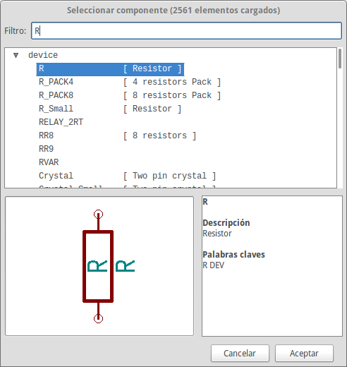 -
Haga doble clic en él. Esto cerrará la ventana "Seleccionar componente". Coloque el componente en la hoja del esquema haciendo clic donde desee ubicarlo.
-
Haga clic en el icono de la lupa para hacer zoom sobre el componente. También puede utilizar la rueda del ratón para acercar y alejar la imagen. Pulse el botón central del ratón (rueda) para desplazarse horizontal y verticalmente.
-
Intente colocar el ratón sobre el componente R y pulse la tecla r. El componente debería girarse. De hecho no necesita hacer clic en el componente para rotarlo.
NotaSi el ratón estaba sobre el Campo Referencia (R) o Campo Valor (R?), Aparecerá un menú. Verá estos menús Aclarar Selección a menudo en KiCad, estos permiten trabajar en los objetos que se encuentran unos encima de otros. En este caso, indique a KiCad que desea realizar la acción en el Componente …R…. -
Haga clic derecho en el medio del componente y seleccione Editar componente → Valor. Puede lograr el mismo resultado situandose sobre el componente y pulsando la tecla v. Alternativamente, la tecla e le llevará a una ventana de edición más general. Observe cómo el menú del botón derecho muestra los atajos del teclado para todas las acciones disponibles.
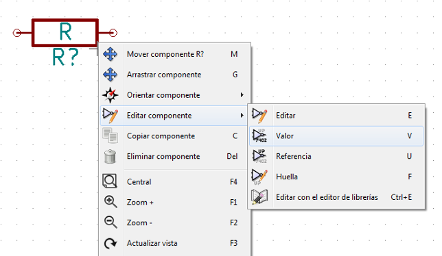 -
Aparecerá la ventana de valor del componente. Reemplace el valor actual R con 1k. Haga clic en Aceptar.
NotaNo cambie el campo referencia (R?), Esto se hará de forma automática más adelante. El valor dentro de la resistencia ahora debería ser 1k. 
-
Para colocar otra resistencia, simplemente haga clic donde desee que la resistencia aparezca. La ventana de selección de componentes aparecerá de nuevo.
-
La resistencia que eligió previamente se encuentra ahora en la lista Historial, apareciendo como R. Haga clic en Aceptar y coloque el componente.
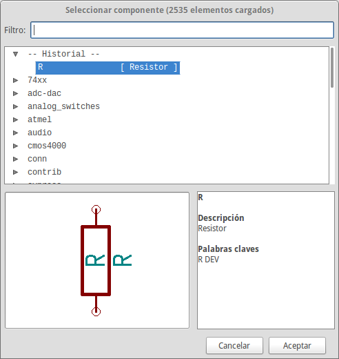 -
En caso de que haya cometido un error y desee eliminar un componente, haga clic derecho sobre el componente y luego clic en Eliminar Componente. Esto eliminará el componente del esquema. Como alternativa, puede situarse sobre el componente que desea eliminar y pulsar la tecla del.
NotaPuede editar cualquier atajo de teclado predeterminado, vaya a Preferencias → Atajos de teclado → Editar atajos de teclado. Cualquier modificación se guardará inmediatamente. -
También puede duplicar un componente existente ya en su hoja de esquema situando el cursor sobre éste y pulsando la tecla c. Haga clic donde desee colocar el nuevo componente duplicado.
-
Haga clic derecho en la segunda resistencia. Seleccione Arrastrar Componente. Recoloque el componente y haga clic izquierdo para situarlo. La misma funcionalidad puede lograrse situando el cursor sobre el componente y pulsando la tecla g. Utilice la tecla r para girar el componente. La tecla x y la tecla y voltearán el componente sobre el eje correspondiente..
NotaClic derecho → Mover componente (equivalente a la pulsación de la letra m) es también una buena opción para mover cualquier objeto, pero es mejor usarla solo con las etiquetas de componentes y componentes aun no conectados. Se verá posteriormente el porqué de este caso. -
Edite la segunda resistencia situando el ratón sobre ella y pulsando la letra v. Reemplace R con 100. Puede deshacer cualquiera de las acciones con las teclas ctrl+z.
-
Cambie el tamaño de la rejilla. Probablemente haya notado que en la hoja del esquema todos los componentes se encajan en una rejilla de paso grande. Puede cambiar fácilmente el tamaño de la rejilla mediante Clic derecho → Selección de Rejilla. En General, es recomendable utilizar una rejilla de 50,0 mils (milésimas de pulgada) para la hoja del esquema.
-
Vamos a añadir un componente desde una biblioteca que no está configurada en el proyecto predeterminado. En el menú, elija Preferencias → Bibliotecas de Componentes y haga clic en el botón Añadir de Archivos de bibliotecas de componentes.
-
Necesita encontrar donde están instaladas las bibliotecas oficiales de KiCad en su ordenador. Busque un directorio llamado library con cientos de archivos .dcm y .lib. Pruebe en C:\Program Files (x86)\KiCad\share\ (Windows) o /usr/share/kicad/library/ (Linux). Cuando haya encontrado el directorio, elija y añada la biblioteca microchip_pic12mcu y cierre la ventana.
-
Repita los pasos para añadir un componente, sin embargo seleccione la biblioteca microchip_pic12mcu en vez de la biblioteca device y elija el componente PIC12C508A-I/SN.
-
Sitúe el ratón sobre el componente microcontrolador. Presione las tecla y o la tecla x en el teclado. Observe como es volteado el componente sobre su eje x o su eje y. Vuelva a presionar la tecla para volverlo a situar en su orientación original.
-
Repita los pasos para añadir un componente, esta vez eligiendo la biblioteca device y eligiendo un componente LED.
-
Organice todos los componentes en su esquema con la distribución que se muestra debajo.

-
Ahora necesitamos crear el símbolo MYCON3 para nuestro conector de 3 pines. Puede saltar a la sección Crear Símbolos de Esquema en KiCad para aprender como realizar este componente y regresar a esta sección para continuar con el diseño.
-
Ahora podemos colocar el nuevo componente recién creado. Pulse la tecla a y seleccione el componente MYCONN3 de la biblioteca mylib.
-
El identificador J? aparecerá bajo la etiqueta de MYCONN3. Si quiere cambiar su posición, haga clic derecho sobre J? y elija Mover Referencia (equivalente a la pulsación de la tecla m). Puede resultar útil ampliar mediante el zoom antes/durante la realización. Reubique J? bajo el componente como se muestra debajo. Las etiquetas pueden ser movidas tantas veces como sea necesario.

-
Es hora de colocar los símbolos de alimentación y tierra. Haga clic en el botón Colocar puerto de alimentación
 en la barra de herramientas
derecha. Puede conseguir el mismo efecto pulsando la tecla p. En la
ventana de selección de componentes, desplácese y seleccione VCC de la
biblioteca power. Haga clic en OK.
en la barra de herramientas
derecha. Puede conseguir el mismo efecto pulsando la tecla p. En la
ventana de selección de componentes, desplácese y seleccione VCC de la
biblioteca power. Haga clic en OK.
-
Haga clic sobre el pin de la resistencia de 1k para colocar el puerto VCC. Haga clic en la zona superior del pin VDD del microcontrolador. En el histórico del selector de componentes seleccione VCC y colóquelo al lado del pin VDD. Repita el proceso para añadir un nuevo puerto VCC por encima del pin VCC de MYCONN3.
-
Repita el proceso pero esta vez seleccione el puerto GND. Coloque un símbolo GND bajo el pin GND de MYCONN3. Coloque otro símbolo GND a la derecha del pin VSS del microcontrolador. El esquema debería paracerse a este:

-
Ahora, conectaremos todos nuestros componentes. Haga clic en el icono Añadir hilo
 en la barra de
herramientas derecha.
Nota
en la barra de
herramientas derecha.
NotaTenga cuidado de no elegir Añadir bus, que aparece justo debajo de este símbolo pero tiene una linea mas ancha. La sección Conexiones de bus en KiCad explicará como usar los buses. -
Haga clic en el círculo pequeño al final del pin 7 del microcontrolador y a continuación haga clic en el círculo pequeño en el pin 2 del LED. Puede aproximarse con el zoom mientras que está realizando la conexión.
NotaSi desea cambiar la posición de los componentes ya cableados, es importante utilizar la tecla g (grab) y no la tecla m (move). El uso de la opción grab mantendrá los cables conectados. Revise el paso 24 en caso de que no recuerde cómo mover un componente. 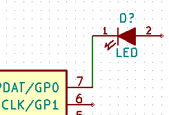 -
Repita este proceso y conecte el resto de componentes como se muestra a continuación. Para terminar un hilo simplemente haga doble clic. Al conectar los símbolos VCC y GND, el hilo debe tocar la parte inferior del símbolo VCC y el centro de la parte superior del símbolo GND. Vea la siguiente imagen.

-
Consideremos ahora un método alternativo de realizar conexiones utilizando etiquetas. Elija la herramienta añadir nombre de nodo haciendo clic en icono
 en la barra de
herramientas de la derecha. También puede utilizar la tecla l.
en la barra de
herramientas de la derecha. También puede utilizar la tecla l.
-
Haga clic en el medio del cable conectado al pin 6 del microcontrolador. Nombre esta etiqueta como "INPUT".
-
Siga el mismo procedimiento para colocar otra etiqueta en el hilo a la derecha de la resistencia de 100 ohmios. Nombrela también como "INPUT". Al tener las dos etiquetas el mismo nombre, se crea una conexión invisible entre el pin 6 del PIC y la resistencia de 100 ohmios. Esta es una técnica útil para conectar hilos en un diseño complejo donde el dibujo de las líneas haría todo el esquema desordenado. Para colocar una etiqueta no necesita necesariamente un hilo, simplemente puede colocar la etiqueta sobre un pin del componente.
-
Las etiquetas también pueden ser utilizadas simplemente para etiquetar hilos con fines informativos. Coloque una etiqueta en el pin 7 del PIC. Introduzca el nombre de uCtoLED. Nombre del hilo entre la resistencia y el LED como LEDtoR. Nombre el hilo entre MYCONN3 y la resistencia como "INPUTtoR '.
-
No tiene porque etiquetar las líneas de VCC y GND, dado que estas están implícitamente etiquetadas a través de los puertos de alimentación a los que están conectadas.
-
Abajo puede ver como debería ser su resultado final.

-
Tratemos ahora los hilos no conectados. Cualquier pin o hilo que no esté conectado generará una advertencia durante el chequeo realizado por KiCad. Para evitar estas advertencias puede indicar al programa que los cables no conectados son deliberados o indicar manualmente cada cable o pin sin conectar como desconectado.
-
Haga clic en el icono de Añadir marca de no conectado
 en la barra de herramientas de la
derecha. Haga clic en los pines 2, 3, 4 y 5. Aparecerá una X para indicar
que la falta de una conexión es intencional.
en la barra de herramientas de la
derecha. Haga clic en los pines 2, 3, 4 y 5. Aparecerá una X para indicar
que la falta de una conexión es intencional.

-
Algunos componentes tienen pines de alimentación no visibles. Puede hacerlos visibles haciendo clic en el icono Mostrar pines ocultos
 en la barra de
herramientas izquierda. Los pines de alimentación ocultos se conectan
automáticamente si se respetan los nombres VCC y GND. En general, debería
evitar hacer pines de alimentación ocultos.
en la barra de
herramientas izquierda. Los pines de alimentación ocultos se conectan
automáticamente si se respetan los nombres VCC y GND. En general, debería
evitar hacer pines de alimentación ocultos.
-
Ahora es necesario añadir una Etiqueta de Potencia para indicar a KiCad que la alimentación viene de alguna parte. Pulse la tecla a, seleccione "Listar Todos", haga doble clic en la biblioteca "power" y la busque PWR_FLAG. Coloque dos de ellos. Conecte a un pin GND y VCC a como se muestra a continuación.
 Nota
NotaEsto evitará la clásica advertencia durante la comprobación del esquema: Warning Pin power_in not driven (Net xx) -
A veces es bueno escribir comentarios aquí y allá. Para agregar comentarios use el icono de Añadir texto (comentarios):
 en la barra de herramientas de
la derecha.
en la barra de herramientas de
la derecha.
-
Todos los componentes necesitan tener identificadores únicos. De hecho, muchos de nuestros componentes están siendo nombrado como R? o 'J?. La asignación de un identificador se puede hacer de forma automática haciendo clic en el icono Anotar esquema
 .
.
-
En la ventana Anotar Esquema, seleccione Utilizar todo el esquema y haga clic en el botón Anotación. Haga clic en Aceptar en el mensaje de confirmación y haga clic en "Cerrar". Observe cómo todos los ? han sido reemplazados con números. Cada identificador es ahora único. En nuestro ejemplo, se les ha llamado R1, R2, U1, D1 y J1.
-
Revisemos ahora los errores de nuestro esquema. Haga clic en el icono Comprobar Reglas Eléctricas
 en la
barra de herramientas superior. Haga clic en el botón Ejecutar. Se genera
un informe que le muestra los errores o advertencias tales como cables
desconectados. Debe tener 0 Errores y 0 Advertencias. En caso de errores o
advertencias, una pequeña flecha verde aparecerá en el esquema en la
posición donde se encuentra el error o la advertencia. Marque Crear archivo
de informe ERC y pulse el botón Ejecutar de nuevo para recibir más
información acerca de los errores.
Nota
en la
barra de herramientas superior. Haga clic en el botón Ejecutar. Se genera
un informe que le muestra los errores o advertencias tales como cables
desconectados. Debe tener 0 Errores y 0 Advertencias. En caso de errores o
advertencias, una pequeña flecha verde aparecerá en el esquema en la
posición donde se encuentra el error o la advertencia. Marque Crear archivo
de informe ERC y pulse el botón Ejecutar de nuevo para recibir más
información acerca de los errores.
NotaSi obtiene una advertencia de "No se ha encontrado un editor predeterminado, debe elegirlo", intente ajustar la ruta a c:\windows\notepad.exe (windows) or /usr/bin/gedit (Linux). -
El esquema esta finalizado. Ahora podemos crear un archivo Netlist al que añadiremos la huella de cada componente. Haga clic en icono Generar Netlist
 en la barra de
herramientas superior. Haga clic en botón Generar y guarde con el nombre
de archivo predeterminado.
en la barra de
herramientas superior. Haga clic en botón Generar y guarde con el nombre
de archivo predeterminado.
-
Después de generar el archivo de Netlist, haga clic en el icono Ejecutar Cvpcb
 en la barra de herramientas
superior. Si aparece una ventana de error indicando que falta algún archivo,
simplemente ignórela y haga clic en Aceptar.
en la barra de herramientas
superior. Si aparece una ventana de error indicando que falta algún archivo,
simplemente ignórela y haga clic en Aceptar.
-
Cvpcb permite enlazar todos los componentes de su esquema con huellas de la biblioteca de KiCad. El panel en el centro muestra todos los componentes utilizados en su esquema. Aquí seleccione D1. En el panel de la derecha tiene todas las huellas disponibles, aquí desplácese hacia abajo hasta "LED: LED-5MM 'y haga doble clic en él.
-
Es posible que el panel de la derecha muestre solamente un subgrupo seleccionado de huellas disponibles. Esto se debe a que KiCad está tratando de sugerirle un subconjunto de huellas adecuados. Haga clic en los
 ,
,
 y
y
 para
activar o desactivar estos filtros.
para
activar o desactivar estos filtros.
-
Para IC1 seleccione la huella Housings_DIP:DIP-8_W7.62mm. Para J1 seleccione la huella Connect:Banana_Jack_3Pin. Para R1 y R2 seleccione la huella Discret:R1.
-
Si está interesado en saber como es la huella que está seleccionando, tiene dos opciones. Puede hacer clic en el icono Ver huella seleccionada
 para una vista
previa de la huella actual. Alternativamente, haga clic en el icono "Mostrar
documentación de lista de huellas"
para una vista
previa de la huella actual. Alternativamente, haga clic en el icono "Mostrar
documentación de lista de huellas"
 y obtendrá un documento PDF
de varias páginas con todas las huellas disponibles. Puede imprimir y ver
sus componentes para asegurarse de que las dimensiones coinciden.
y obtendrá un documento PDF
de varias páginas con todas las huellas disponibles. Puede imprimir y ver
sus componentes para asegurarse de que las dimensiones coinciden.
-
Ya estamos listos. Ahora puede actualizar su archivo de netlist con todas las huellas asociadas. Haga clic en Archivo → Guardar como. Acepte el nombre predeterminado tutorial1.net, haga clic en Guardar. También puede utilizar el icono
 . Su archivo de
netlist ahora se ha actualizado con todas las huellas. Tenga en cuenta que
si no encuentra la huella de cualquier dispositivo, tendrá que hacer sus
propias huellas. Esto se explicará en una sección posterior de este
documento.
. Su archivo de
netlist ahora se ha actualizado con todas las huellas. Tenga en cuenta que
si no encuentra la huella de cualquier dispositivo, tendrá que hacer sus
propias huellas. Esto se explicará en una sección posterior de este
documento.
-
Puede cerrar Cvpcb y volver al editor de esquemas Eeschema. Guarde el proyecto haciendo clic en Archivo → Guardar Esquema completo del Proyecto. Cierre el editor de esquemas.
-
Cambie al gestor del proyecto de KiCad.
-
El archivo netlist describe todos los componentes y las conexiones de sus respectivos pines. El archivo netlist es en realidad un archivo de texto que se puede inspeccionar, editar o realizar scripts.
NotaLos archivos de la bibliotecas (*.Lib) son también archivos de texto y por tanto fácilmente editables o analizables mediante scripts. -
Para crear una lista de materiales (BOM), vaya al editor de esquemas Eeschema y haga clic en el icono Lista de Materiales
 en la barra de herramientas
superior. Por defecto no hay ningún plugin activo. Agregue uno, haciendo
clic en el botón Agregar Plugin. Seleccione el archivo *.xsl que desea
utilizar, en este caso, seleccionamos bom2csv.xsl.
Nota
en la barra de herramientas
superior. Por defecto no hay ningún plugin activo. Agregue uno, haciendo
clic en el botón Agregar Plugin. Seleccione el archivo *.xsl que desea
utilizar, en este caso, seleccionamos bom2csv.xsl.
NotaEl archivo *.xsl está situado en el directorio plugins de la instalación KiCad, que se encuentra en: /usr/lib/kicad/plugins/.
O consega el archivo a través de:
wget https://raw.githubusercontent.com/KiCad/kicad-source-mirror/master/eeschema/plugins/bom2csv.xsl
KiCad genera automáticamente el comando, por ejemplo:xsltproc -o "%O" "/home/<user>/kicad/eeschema/plugins/bom2csv.xsl" "%I"
Es posible que desee añadir la extensión, cambie esta línea de comandos a:xsltproc -o "%O.csv" "/home/<user>/kicad/eeschema/plugins/bom2csv.xsl" "%I"
Pulse el botón Ayuda para obtener más información.
-
Ahora pulse Generar. El archivo (mismo nombre que su proyecto) se encuentra en la carpeta del proyecto. Abra el archivo *.csv Con LibreOffice Calc o Excel. Aparecerá una ventana de importación, pulse Aceptar.
Ya está listo para pasar a la parte diseño de la PCB, que se presenta en la siguiente sección. Sin embargo, antes de seguir adelante vamos a echar un vistazo rápido a la forma de conectar los pines de componentes utilizando buses.
3.2. Conexiones mediante buses en KiCad
A veces, puede que necesite conectar varios pines consecutivos de un componente A con algunos otros pines consecutivos de otro componente B. En este caso, tiene dos opciones: el método de etiquetado que ya hemos visto o el uso de una conexión mediante un bus. Veamos cómo hacerlo.
-
Supongamos que tiene tres conectores de 4 pines que desea conectar entre sí pin a pin. Use la opción de etiquetar (presionando la tecla l) para nombrar al pin 4 del componente P4. Nombre esta etiqueta como a1. Ahora vamos a presionar la tecla Ins para añadir automáticamente una nueva etiqueta en el pin debajo de pin 4 (PIN 3). Observe cómo la etiqueta se cambia el nombre automáticamente a2.
-
Pulse la tecla Ins dos veces más. La tecla Ins corresponde a la acción Repetir último elemento y es un comando infinitamente útil que puede hacer su vida mucho más fácil.
-
Repita la misma acción de etiquetado en los otros dos conectores CONN_2 y CONN_3 y ya está. Si continúa y realiza una PCB verá que los tres conectores están conectados entre sí. La Figura 2 muestra el resultado de lo que hemos descrito. Con fines estéticos también es posible añadir una serie de conectores de hilo a bus utilizando el icono
 y líneas de bus
utilizando el icono
y líneas de bus
utilizando el icono
 , como se muestra en la Figura 3. Tenga en cuenta, sin embargo, que
esto no añade ningún efecto sobre la PCB.
, como se muestra en la Figura 3. Tenga en cuenta, sin embargo, que
esto no añade ningún efecto sobre la PCB.
-
Cabe señalar que los hilos cortos unidos a los pines en la figura 2 no son estrictamente necesarios. De hecho, las etiquetas se podrían haber aplicado directamente a los pines.
-
Demos un paso más allá y supongamos que tenemos un cuarto conector llamado CONN_4 y, por alguna razón, su etiquetado ha de ser un poco diferente (b1, b2, b3, b4). Ahora queremos conectar el Bus a con el Bus b mediante una asignación pin a pin. Queremos realizarlo sin usar etiquetado de pin (que también es posible), sino mediante el etiquetado en la línea del bus, con una etiqueta por bus.
-
Conecte y etiquete CONN_4 utilizando el método de etiquetado explicado anteriormente. Nombre los pines B1, B2, B3 y B4. Conecte los pines a una serie de conectores de entrada a bus utilizando el icono
y a un bus utilizando
el icono:
 . Vea la Figura 4.
. Vea la Figura 4.
-
Ponga una etiqueta (presione la tecla l) en el bus de CONN_4 y nombrela como b[1..4].
-
Ponga una etiqueta (presione la tecla de opción l) en el bus previo (bus a) y nombrela como a[1..4].
-
Lo que ahora podemos hacer es conectar el bus a[1..4] con el autobús b[1..4] utilizando una línea de bus con el botón
.
-
Mediante la conexión de los dos buses juntos, pin a1 se conectará automáticamente al pin b1, a2 se conectará a b2 y así sucesivamente. La figura 4 muestra como sería el resultado final.
NotaLa opción Repetir último elemento accesible mediante de la tecla Ins puede ser utilizada con éxito para repetir inserciones periódicas de elementos. Por ejemplo, los hilos cortos conectados a todos los pines en la Figura 2, Figura 3 y la Figura 4 se han colocado con esta opción. -
La opción Repetir último elemento accesible a través de la tecla Ins también se ha utilizado ampliamente para colocar las múltiples series de conexión de entrada a bus utilizando el icono
.

4. Diseño de la placa de circuito impreso
Ahora es el momento de utilizar el archivo de netlist que ha generado para diseñar la PCB. Esto se hace con la herramienta Pcbnew.
4.1. Usando Pcbnew
-
Desde el gestor del proyecto en KiCad, haga clic en el icono Pcbnew
 . La ventana de Pcbnew se
abrirá. Si recibe un mensaje de error indicando la falta de algún archivo
*.kicad_pcb y le pregunta si desea crearlo, simplemente haga clic en Sí.
. La ventana de Pcbnew se
abrirá. Si recibe un mensaje de error indicando la falta de algún archivo
*.kicad_pcb y le pregunta si desea crearlo, simplemente haga clic en Sí.
-
Comenzamos introduciendo alguna información sobre el diseño. Haga clic en el icono de ajustes de página
en la barra de herramientas superior. Ajuste tamaño de papel como A4 y
título como Tutorial1.
-
Es una buena idea comenzar definiendo la separación y el ancho de pista mínimo a aquellas requeridas por el fabricante de la PCB. En general se puede ajustar la separación a 0.25 y el ancho de pista mínimo a 0.25. Haga clic en el menú Reglas de Diseño → Reglas de diseño. Si no se muestra, haga clic en la pestaña Editor de clases de nodos. Cambie el campo separación en la parte superior de la ventana a 0.25 y el campo ancho de pista a 0.25, como se muestra a continuación. Las medidas mostradas estan en mm.
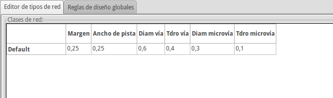 -
Haga clic en la pestaña Reglas de diseño globales y ajuste el Ancho de pista min. a 0,25. Haga clic en el botón OK para confirmar los cambios y cierre la ventana del Editor de Reglas de Diseño.
-
Ahora vamos a importar el archivo de netlist. Haga clic en el icono de Leer Netlist
en la barra de
herramientas superior. Haga clic en el botón "Examinar Archivos Netlist',
seleccione tutorial1.net en la ventana de selección de archivos y haga
clic en Leer netlist actual. Luego haga clic en el botón "Cerrar".
-
Todos los componentes deberían estar visibles en la esquina superior izquierda, justo por encima de la página. Desplazarse hacia arriba si no puedes verlos.
-
Seleccione todos los componentes con el ratón y muévalos hacia el centro del diseño. Si es necesario, puede acercar y alejar mientras mueve los componentes.
-
Todos los componentes están conectados a través de un grupo fino de hilos llamados ratsnest. Asegúrese de que el botón "Ocultar ratsnest'
 esta
pulsado. De esta manera se puede ver el ratsnest uniendo todos los
componentes.
Nota
esta
pulsado. De esta manera se puede ver el ratsnest uniendo todos los
componentes.
NotaLa herramienta funciona del revés; al pulsar este botón en realidad se muestra el ratsnest. -
Puede mover cada componente situandose sobre él y pulsando la tecla g. Haga clic donde desee colocarlos. Mueva todos los componentes alrededor hasta que se minimice el número de cruces de hilos ratsnest.
NotaSi en vez de arrastrar los componentes (con la tecla g) los mueve mediante el uso de la tecla m, verá más adelante que se pierde la conexión de pista (lo mismo que ocurre en el editor de esquemas). En pocas palabras, utilice siempre la opción de la tecla g. 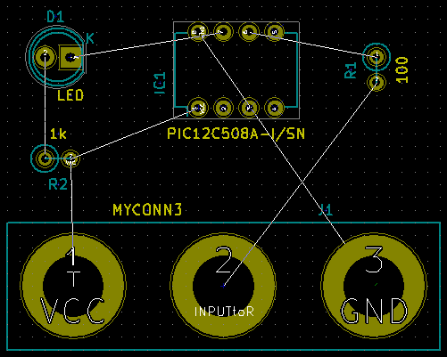 -
Si el ratsnest desaparece o la pantalla se enmaraña, haga clic derecho y haga clic en Redibujar vista. Note como existe una conexión de un pin de la resistencia de 100 ohmios al pin 6 del componente PIC. Este es el resultado del método de etiquetado utilizado para conectar los pines. Las etiquetas se prefieren a menudo a los hilos reales porque hacen que el esquema resulte mucho menos desordenado.
-
Ahora vamos a definir el borde de la placa. Seleccione Edge.Cuts en el menú desplegable en la barra de herramientas superior. Haga clic en el icono Añadir línea o polígono
 en la barra de
herramientas de la derecha. Trace el contorno del borde de la placa,
haciendo clic en cada una de las esquinas, y no olvide dejar un pequeño
espacio entre el borde del área de componentes y el borde de la placa.
en la barra de
herramientas de la derecha. Trace el contorno del borde de la placa,
haciendo clic en cada una de las esquinas, y no olvide dejar un pequeño
espacio entre el borde del área de componentes y el borde de la placa.
-
A continuación, conecte todos los hilos excepto el de GND. De hecho, vamos a conectar todas las conexiones GND de una sola vez usando un plano de tierra situado en capa de cobre de la parte inferior de la placa (llamada B.Cu).
-
Ahora tenemos que elegir sobre qué capa de cobre que queremos trabajar. Seleccione F.Cu (PgUp) en el menú desplegable de la barra de herramientas superior. Esta es la capa de cobre superior.

-
Si decidiera, por ejemplo, hacer una PCB de 4 capas en vez de doble capa, vaya a Reglas de Diseño → Configuración de Capas y cambie el campo Capas de Cobre a 4. En la tabla Capas puede nombrar las capas y decidir la utilización de cada capa de cobre. Observe que hay pre-configuraciones muy útiles que se pueden seleccionar a través del menú Agrupaciones de capa predefinidas.
-
Haga clic en el icono agregar pistas y vias imagen
 en la barra de
herramientas de la derecha. Haga clic en el pin 1 de "J1" y realice un
trazado hasta el pad R2. Haga doble clic para establecer la finalización
de la pista. La anchura de la pista será la predeterminada de 0.250
mm. Puede cambiar el ancho de pista en el menú desplegable en la barra de
herramientas superior. Tenga en cuenta que por defecto sólo hay un tamaño de
pista definido.
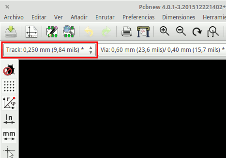
en la barra de
herramientas de la derecha. Haga clic en el pin 1 de "J1" y realice un
trazado hasta el pad R2. Haga doble clic para establecer la finalización
de la pista. La anchura de la pista será la predeterminada de 0.250
mm. Puede cambiar el ancho de pista en el menú desplegable en la barra de
herramientas superior. Tenga en cuenta que por defecto sólo hay un tamaño de
pista definido.
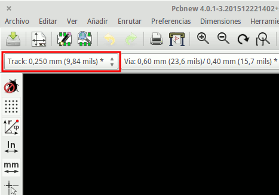 -
Si desea agregar más anchos de pistas a seleccionar, vaya a: Reglas de Diseño → Reglas de Diseño → Reglas de Diseño Global y en la parte inferior derecha de esta ventana puede añadir cualquier otra anchura que desee tener a su disposición. A continuación, puede elegir el ancho de la pista en el menú desplegable, durante el diseño de la placa. Vea el siguiente ejemplo (medidas en pulgadas).
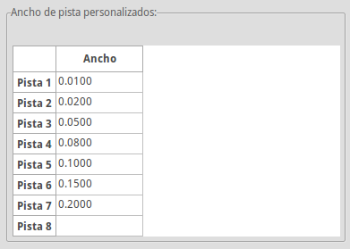 -
También, se puede añadir una clase Nodo en la que especificar un conjunto de opciones. Vaya a Reglas de Diseño → Reglas de Diseño → Editor de Clases de Nodos y añada una nueva clase llamada power. Cambie el ancho de pista de 8 mil (indicado como 0,0080) a 24 mil (indicado como 0,0240). A continuación, agregue todos los nodos menos GND a la clase "power" (seleccione default a la izquierda y power a la derecha y utilice las flechas).
-
Si desea cambiar el tamaño de la rejilla, Haga clic derecho → Selección de Rejilla. Asegúrese de seleccionar el tamaño de la cuadrícula adecuada antes o después de que se sitúen los componentes y de conectarlos entre sí con las pistas.
-
Repita este proceso hasta que todos los cables, excepto el pin 3 de J1, están conectados. Su placa debe ser similar al siguiente ejemplo.

-
Ahora vamos a crear una pista en la otra capa de cobre del PCB. Seleccione B.Cu en el menú desplegable en la barra de herramientas superior. Haga clic en el icono agregar pistas y vías
. Dibuje una pista entre el
pin 3 de J1 y el pin 8 de U1. En realidad, esto no es necesario ya que
podíamos hacer esto con el plano del masa. Observe cómo ha cambiado el color
de la pista.
-
Vaya desde el pin A al pin B cambiando de capa. Es posible cambiar la capa de cobre mientras se está trazando una pista mediante la colocación de una vía. Mientras se traza una pista en la capa de cobre superior, haga clic derecho y seleccione Colocar Vía o simplemente pulse la tecla v. Esta le llevará a la capa inferior donde puede continuar con su pista.

-
Cuando quiera inspeccionar una pista concreta puede hacer clic en el icono resaltar Nodo
 en
la barra de herramientas de la derecha. Haga clic en el pin 3 de J1. La
pista en sí y todos los pads conectados a ella deben quedar resaltados.
en
la barra de herramientas de la derecha. Haga clic en el pin 3 de J1. La
pista en sí y todos los pads conectados a ella deben quedar resaltados.
-
Ahora crearemos un plano de tierra que se conectará a todos los pines GND. Haga clic en el icono Agregar zonas
 en la barra de herramientas de
la derecha. Vamos a trazar un rectángulo alrededor de la placa, así que haga
clic donde desee situar una de las esquinas. En la ventana que aparece,
ajuste Pad en la zona a Thermal relief y Orientar bordes en Zona a
H,V y haga clic en OK.
en la barra de herramientas de
la derecha. Vamos a trazar un rectángulo alrededor de la placa, así que haga
clic donde desee situar una de las esquinas. En la ventana que aparece,
ajuste Pad en la zona a Thermal relief y Orientar bordes en Zona a
H,V y haga clic en OK.
-
Trace alrededor del contorno de la placa haciendo clic en cada esquina. Haga doble clic para terminar su rectángulo. Haga clic derecho dentro del área que acaba de trazar. Haga clic en Rellenar todas las zonas. La placa debe rellenarse con verde y ser algo parecido a esto:

-
Ejecute el comprobador de reglas de diseño haciendo clic en el icono Realizar Chequeo de Reglas de Diseño
 en la barra de herramientas superior. Haga clic en Comenzar DRC. No debe
haber ningún error. Haga clic en Listar desconectados. No debe haber
ninguna pista sin conectar. Haga clic en Aceptar para cerrar la ventana de
Control del DRC.
en la barra de herramientas superior. Haga clic en Comenzar DRC. No debe
haber ningún error. Haga clic en Listar desconectados. No debe haber
ninguna pista sin conectar. Haga clic en Aceptar para cerrar la ventana de
Control del DRC.
-
Guarde el archivo haciendo clic en Archivo → Guardar. Para contemplar su placa en 3D, haga clic en Vista → Visor 3D.

-
Puede arrastrar el ratón para rotar la PCB.
-
Su placa está finalizada. Para enviarla a un fabricante tendrá que generar todos los archivos Gerber.
4.2. Generar archivos Gerber
Una finalizada la PCB, puede generar archivos Gerber para cada capa y enviarlos a su fabricante de PCB favorito, quien fabricará la placa para usted.
-
Desdes KiCad, abra la herramienta de software Pcbnew y cargue el archivo de la placa haciendo clic en el icono
 .
.
-
Haga clic en Archivo → Trazar. Seleccione Gerber como el Formato de gráfico y seleccione la carpeta en la que poner todos los archivos Gerber. Continúe haciendo clic en el botón Trazar.
-
Estas son las capas que necesita para seleccionar para realizar una PCB de 2 capas típica:
| Capa | Nombre de capa en KiCad | Antiguo nombre de capa en KiCad | Extensión Gerber por defecto | "Usar extensiones de archivo Protel" activada |
|---|---|---|---|---|
Capa inferior |
B.Cu |
Copper |
.GBR |
.GBL |
Capa superior |
F.Cu |
Component |
.GBR |
.GTL |
Serigrafía superior |
F.SilkS |
SilkS_Cmp |
.GBR |
.GTO |
Mascara de soldadura inferior |
B.Mask |
Mask_Cop |
.GBR |
.GBS |
Mascara de soldadura superior |
F.Mask |
Mask_Cmp |
.GBR |
.GTS |
Bordes |
Edge.Cuts |
Edges_Pcb |
.GBR |
.GM1 |
4.3. Usando GerbView
-
Para ver todos los archivos Gerber vaya al gestor del proyecto en KiCad y haga clic en el icono GerbView. En el menú despegable seleccione "Capa 1". Haga clic en Archivo → Cargar archivo Gerber o haga clic en el
 . Cargue todos archivos
Gerber generados uno cada vez. Note como todos se muestran apilados uno
encima del otro.
. Cargue todos archivos
Gerber generados uno cada vez. Note como todos se muestran apilados uno
encima del otro.
-
Utilice el menú de la derecha para seleccionar/deseleccionar qué capa mostrar. Inspeccione cuidadosamente cada capa antes de enviarlos a producir.
-
Para generar el archivo de taladrado, desde Pcbnew vaya de nuevo a Archivo → Trazar. Los ajustes por defecto deberían estar bien.
4.4. Trazado automático con FreeRouter
Trazar una placa a mano es rápido y divertido, sin embargo, para una placa con gran cantidad de componentes es posible que desee utilizar un trazador automático. Recuerde que debe primero trazar las pistas criticas a mano y luego establecer el trazador automático para realizar la parte aburrida. Este sólo conectará los hilos no conectados. El trazador automático que vamos a utilizar es FreeRouter de freerouting.net.
|
Nota
|
Freerouter es una aplicación Java de código abierto, y es necesario que la cree usted mismo para poder usarla con KiCad. El código fuente de Freerouter se puede encontrar en este sitio: https://github.com/nikropht/FreeRouting |
-
Desde Pcbnew haga clic en Archivo → Exportar → Specctra DSN o haga clic en Herramientas → FreeRoute → Exportar un archivo de diseño Specctra (* .dsn) y guarde el archivo localmente. Lance FreeRouter y haga clic en el botón 'Abrir su propio diseño ", busque el archivo dsn y carguelo.
NotaLa ventana Herramientas → FreeRoute tiene un buen botón de ayuda que abre un visor de archivos con un pequeño documento en el interior llamado Directrices de Freerouter. Por favor, siga las siguientes instrucciones para utilizar FreeRoute eficazmente. -
FreeRouter tiene algunas características que KiCad actualmente no tiene, tanto para el trazado manual como para el trazado automático. FreeRouter opera en dos pasos: en primer lugar, traza la placa y luego la optimiza. Una optimización completa puede tardar mucho tiempo, sin embargo se puede detener en cualquier momento cuando lo considere necesario.
-
Puede iniciar el trazado automático haciendo clic en el botón Autoruter en la barra superior. La barra inferior le da información sobre el proceso de trazado en curso. Si el recuento del Pass se pone por encima de 30, tu tabla, probablemente no se puede trazar automáticamente con este router. Separe sus componentes más o gírelos mejor y vuelva a intentarlo. El objetivo de la rotación y la posición de las partes es reducir el número de líneas cruzadas en el ratsnest.
-
Haciendo clic izquierdo con el ratón puede detener el trazado automático e iniciar automáticamente el proceso de optimización. Otro clic izquierdo detendrá el proceso de optimización. A menos que usted realmente necesite detenerlo, es mejor dejar que FreeRouter termine su trabajo.
-
Haga clic en el menú File → Export Specctra Session File y guarde el archivo de placa con la extensión .ses. No necesita guardar el archivo de reglas FreeRouter.
-
Vuelva a Pcbnew. Puede importar su placa recién trazada haciendo clic en Herramientas → FreeRoute y luego en el icono Importar archivo de sesión Spectra (.ses) y seleccionando el archivo .ses.
Si hay cualquier trazado que no le guste, puede borrarlo y volver a la
trazarlo de nuevo, utilizando la tecla del y la herramienta de trazado, que
es el icono Agregar pistas
 en la barra de herramientas de la derecha.
en la barra de herramientas de la derecha.
5. Anotado hacia adelante en KiCad
Una vez que haya completado su esquema electrónico, la asignación de huellas, el diseño de la placa y generado los archivos Gerber, está listo para enviar todo a un fabricante de PCB para que su placa pueda convertirse en realidad.
A menudo, este flujo de trabajo lineal resulta no ser tan unidireccional. Por ejemplo, cuando se tiene que modificar/ampliar una placa que ya haya completado este flujo de trabajo, es posible que necesite mover los componentes alrededor, sustituirlos por otros, cambiar huellas o mucho más. Durante este proceso de modificación, lo que no quiere hacer es modificar de nuevo el trazado de toda la placa desde cero. En su lugar, se realiza del siguiente modo:
-
Supongamos que desea reemplazar el conector CON1 por CON2.
-
Ya tiene un esquema completo y un PCB totalmente trazada.
-
Desde KiCad, inicie Eeschema, haga sus modificaciones suprimiendo CON1 y añadiendo CON2. Guarde su proyecto de esquema mediante el icono
y haga clic en el icono Generar
Netlist
en la barra de
herramientas superior.
-
Haga clic en Netlist y después en guardar. Guarde con el nombre de archivo predeterminado. Tiene que volver a escribir el antiguo.
-
Ahora asigne una huella a CON2. Haga clic en el icono Run cvpcb
en la barra de herramientas
superior. Asigne la huella al nuevo dispositivo CON2. El resto de los
componentes todavía tienen las huellas previamente asignadas. Cerrar
Cvpcb.
-
De vuelta en el editor de esquemas, guarde el proyecto, haga clic en Archivo → Guardar todo el Proyecto de esquema. Cierre el editor de esquemas.
-
Desde el gestor del proyecto de KiCad, haga clic en el icono Pcbnew. La ventana Pcbnew se abrirá.
-
La vieja placa, ya trazada, se abre automáticamente. Vamos a importar el nuevo archivo netlist. Haga clic en el icono Leer Netlist
en la barra de herramientas
superior.
-
Haga clic en el botón "Examinar Archivos Netlist", seleccione el archivo netlist en la ventana de selección de archivos y haga clic en Leer Netlist actual. Luego haga clic en el botón "Cerrar".
-
En este punto, debería poder ver un diseño con todos los componentes anteriores ya conectados. En la esquina superior izquierda debería ver todos los componentes no conectados, en nuestro caso CON2. Seleccione CON2 con el ratón. Mueva el componente al centro de la placa.
-
Coloque CON2 y trace sus conexiones. Una vez hecho esto, guarde y continúe con la generación de archivos Gerber, como de costumbre.
El proceso descrito aquí puede ser fácilmente repetir tantas veces como sea necesario. Junto a la técnica de la anotación hacia adelante descrita anteriormente, hay otro método conocido como Anotación hacia atrás. Este método le permite hacer modificaciones a su PCB ya trazada desde Pcbnew y actualizar esas modificaciones en el archivo de esquema y archivo netlist. El método de anotación hacia atrás, sin embargo, no es tan útil y por lo tanto no se describe aquí.
6. Realizar símbolos de componentes en KiCad
A veces, el componente que desea colocar en su esquema no está en las bibliotecas KiCad. Esto es bastante normal y no hay por qué preocuparse. En esta sección veremos como crear rápidamente un nuevo símbolo de componente con KiCad. Sin embargo, recuerde que siempre puede encontrar componentes para KiCad en Internet. Por ejemplo desde aquí:
En KiCad, un componente es un trozo de texto que comienza con un DEF y termina con ENDDEF. Uno o más componentes se colocan normalmente en un archivo de biblioteca con la extensión .Lib. Si desea agregar componentes a un archivo de biblioteca tan sólo tiene que utilizar los comandos cortar y pegar.
6.1. Usando el editor de bibliotecas de componentes
-
Podemos utilizar el Editor de Bibliotecas de Componentes _ (parte de Eeschema) para hacer nuevos componentes. En el directorio de nuestro proyecto Tutorial1 vamos a crear una carpeta llamada "biblioteca". Dentro pondremos nuestro nuevo archivo de biblioteca _myLib.lib tan pronto como hayamos creado nuestro nuevo componente.
-
Ahora podemos empezar a crear nuestro nuevo componente. Desde KiCad, inicie Eeschema, haga clic en el icono Editor de Bibliotecas
 y luego haga clic en el icono
Nuevo componente
images/icons/new_component.png[new_component_png]. Aparecerá la ventana de
Propiedades del componente. Asigne el nombre MYCONN3 al nuevo componente,
establezca la raíz de designación como J, y el Número de componentes por
paquete a 1. Haga clic en Aceptar. Si aparece alguna advertencia
simplemente haga clic en Sí. En este punto el componente sólo está compuesto
por sus etiquetas. Vamos a añadir algunos pines. Haga clic en el icono
Añadir Pin
y luego haga clic en el icono
Nuevo componente
images/icons/new_component.png[new_component_png]. Aparecerá la ventana de
Propiedades del componente. Asigne el nombre MYCONN3 al nuevo componente,
establezca la raíz de designación como J, y el Número de componentes por
paquete a 1. Haga clic en Aceptar. Si aparece alguna advertencia
simplemente haga clic en Sí. En este punto el componente sólo está compuesto
por sus etiquetas. Vamos a añadir algunos pines. Haga clic en el icono
Añadir Pin
 en la barra de herramientas
de la derecha. Para colocar el pin, haga clic en el centro de la hoja del
editor de partes justo debajo de la etiqueta "MYCONN3 '.
en la barra de herramientas
de la derecha. Para colocar el pin, haga clic en el centro de la hoja del
editor de partes justo debajo de la etiqueta "MYCONN3 '.
-
En la ventana propiedades del pin que aparece, establezca el nombre del pin a VCC, establezca el número de PIN a 1, y el tipo eléctrico a Pasivo. Haga clic en Aceptar.
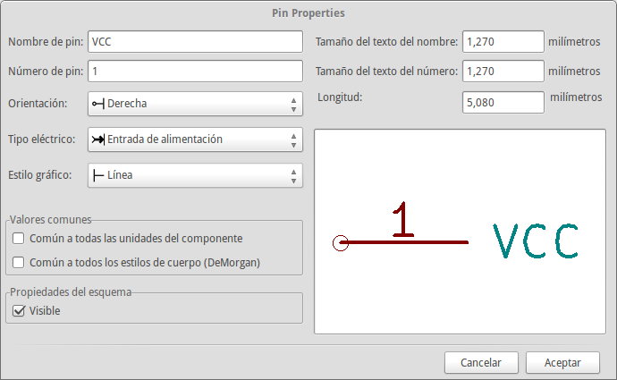 -
Coloque el pin haciendo clic en el lugar donde desee situarlo, justo debajo de la etiqueta MYCONN3.
-
Repita los pasos utilizando esta vez el nombre de Pin INPUT, número Pin debe ser 2, y Tipo Electrico a Pasivo.
-
Repita de nuevo los pasos, cree esta vez un Pin con nombre GND, número Pin igual a 3 y Tipo Electrico como Pasivo. Coloque los pines uno encima del otro. La etiqueta del componente MYCONN3 debe estar en el centro de la página (donde las líneas azules se cruzan).
-
A continuación, dibuje el contorno del componente. Haga clic en el icono Añadir rectángulo
 . Queremos dibujar un
rectángulo junto a los pines, como se muestra a continuación. Para ello,
haga clic donde desee situar la esquina superior izquierda del rectángulo
(no mantenga pulsado el botón del ratón). Haga clic de nuevo para ubicar la
esquina inferior derecha del rectángulo.
. Queremos dibujar un
rectángulo junto a los pines, como se muestra a continuación. Para ello,
haga clic donde desee situar la esquina superior izquierda del rectángulo
(no mantenga pulsado el botón del ratón). Haga clic de nuevo para ubicar la
esquina inferior derecha del rectángulo.

-
If you want to fill the rectangle with yellow, set the fill colour to yellow 4 in Preferences → Select color scheme, then select the rectangle in the editing screen and edit (E), selecting Fill background.
-
Guarde el componente en su biblioteca myLib.lib . Haga clic en el icono Nueva Biblioteca image:images/icons/new_library.png[new_library_png, navegue hasta el directorio tutorial1/biblioteca/ y guarde el nuevo archivo de biblioteca con el nombre myLib.lib.
-
Vaya a Preferencias → Bibliotecas de componentes y añada tutorial1/biblioteca/ en ruta de búsqueda definida por el usuario y myLib.lib en archivos de la biblioteca de componentes.
-
Haga clic en el icono Seleccionar biblioteca de trabajo
 . En la ventana de selección de
biblioteca haga clic en myLib y haga clic en Aceptar. Observe cómo la
cabecera de la ventana indica la biblioteca actualmente en uso, que ahora
debe ser myLib.
. En la ventana de selección de
biblioteca haga clic en myLib y haga clic en Aceptar. Observe cómo la
cabecera de la ventana indica la biblioteca actualmente en uso, que ahora
debe ser myLib.
-
Haga clic en el icono "Actualizar componente actual en biblioteca actual'
 en la barra de
herramientas superior. Guarde todos los cambios haciendo clic en el icono
Guardar biblioteca actual en disco
en la barra de
herramientas superior. Guarde todos los cambios haciendo clic en el icono
Guardar biblioteca actual en disco
 en la barra de
herramientas superior. Haga clic en "Sí" en los mensajes de confirmación que
aparecen. El nuevo símbolo de componente se ha creado y está disponible en
la biblioteca indicada en la barra de título de la ventana.
en la barra de
herramientas superior. Haga clic en "Sí" en los mensajes de confirmación que
aparecen. El nuevo símbolo de componente se ha creado y está disponible en
la biblioteca indicada en la barra de título de la ventana.
-
Ahora puede cerrar la ventana del editor de la biblioteca de componentes. Volverá a la ventana del editor de esquema. Su nuevo componente estará disponible en la biblioteca myLib.
-
Puede hacer cualquier archivo de biblioteca file.lib disponible añadiéndolo a la ruta de bibliotecas. Desde Eeschema, vaya a Preferencias → * Biblioteca * y añadir la ruta de acceso a la misma en la ruta definida por el usuario de búsqueda "y file.lib en archivos de la biblioteca de componentes".
6.2. Exportar, importar y modificar componentes de la biblioteca
En lugar de crear un componente de biblioteca desde cero a veces es más fácil empezar desde uno ya hecho y modificarlo. En esta sección veremos cómo exportar un componente de la biblioteca "device" estándar de KiCad a su propia biblioteca myOwnLib.lib y luego modificarlo.
-
Desde KiCad, inicie Eeschema, haga clic en el icono Editor de Bibliotecas
, haga clic en el
icono Seleccionar biblioteca de trabajo
y elija la biblioteca
device. Haga clic en el icono cargar componente a editar desde la
biblioteca actual
 e
importe el componente RELAY_2RT.
e
importe el componente RELAY_2RT.
-
Haga clic en el icono Exportar componente
 , navegue dentro del directorio
library/ y guarde el nuevo archivo de biblioteca con el nombre
myOwnLib.lib.
, navegue dentro del directorio
library/ y guarde el nuevo archivo de biblioteca con el nombre
myOwnLib.lib.
-
You can make this component and the whole library myOwnLib.lib available to you by adding it to the library path. From Eeschema, go to Preferences → Component Libraries and add both library/ in User defined search path and myOwnLib.lib in the Component library files. Close the window.
-
Haga clic en el icono 'Seleccionar biblioteca de trabajo '
. En la ventana de Selección de
Bibliotecas haga clic en myOwnLib y haga clic en Aceptar. Observe cómo el
titulo de la ventana indica la biblioteca actualmente en uso, debe ser
myOwnLib.
-
Haga clic en el icono de "Cargar componente a editar de la biblioteca actual'
e importe el componente RELAY_2RT.
-
Ahora puede modificar el componente como desee. Sitúe el ratón sobre la etiqueta RELAY_2RT, pulse la tecla e y cambiarle el nombre a MY_RELAY_2RT.
-
Haga clic en el icono Actualizar componente en biblioteca actual
en la barra de
herramientas superior. Guarde todos los cambios haciendo clic en el icono
Guardar biblioteca actual en disco
en la barra de
herramientas superior.
6.3. Hacer símbolos de componentes con quicklib
En esta sección se presenta un método alternativo para crear el símbolo del componente MYCONN3 (ver MYCONN3 arriba) utilizando la herramienta de Internet quicklib.
-
Vaya a la página web de quicklib: http://kicad.rohrbacher.net/quicklib.php
-
Rellene la página con la siguiente información: Component name: MYCONN3, Reference Prefix: J, Pin Layout Style: SIL, Pin Count, N: 3
-
Haga clic en el icono Asignar Pines. Rellene la página con la siguiente información: Pin 1: VCC, Pin 2: INPUT, Pin 3: GND. Tipo: Pasivo para los 3 pines.
-
Haga clic en el icono de vista previa y, si está satisfecho, haga clic en el 'Construir biblioteca de componentes ". Descargue el archivo y cámbiele el nombre por tutorial1/library/myQuickLib.lib.. ¡Ya está listo!
-
Echémosle un vistazo usando KiCad. Desde el gestor del proyecto de KiCad, inicie Eeschema, haga clic en el icono Editor de Bibliotecas
, haga clic en el icono de
Importar componentes
 , vaya a
tutorial1/library/ y seleccione myQuickLib.lib.
, vaya a
tutorial1/library/ y seleccione myQuickLib.lib.

-
Puede disponer de este componente y de toda la biblioteca myQuickLib.lib añadiéndolos a la ruta de bibliotecas de KiCad. Desde Eeschema, vaya a Preferencias → Bibliotecas de componentes y añada library en rutas de búsqueda definidas por el usuario y myQuickLib.lib en archivos de la biblioteca de componentes.
Como puede imaginar, este método de creación de componentes de la biblioteca puede ser muy eficaz cuando se desea crear componentes con un gran número de pines.
6.4. Realizar símbolos de componentes con gran número de pines
En la sección titulada Realizar símbolos de componentes en quicklib vimos cómo hacer un símbolo de componente utilizando la herramienta web quicklib. Sin embargo, ocasionalmente puede que necesite crear un símbolo de componente con un alto número de pines (algunos cientos de pines). En KiCad, esto no es muy complicado.
-
Supongamos que desea crear un símbolo de un dispositivo con 50 pines. Es una práctica común dibujarlo usando varios símbolos de bajo número de pines, por ejemplo dos símbolos con 25 pines cada uno. Esta representación permite una fácil conexión de los pines.
-
La mejor manera de crear nuestro componente es utilizar quicklib para generar dos componentes de 25 pines por separado, re-numerar sus pines utilizando un script de Python y finalmente fusionar los dos mediante el uso de copiar y pegar para convertirlos en un solo componente dentro de la estructura DEF y ENDDEF.
-
A continuación se muestra un ejemplo de un script de Python sencillo que se puede utilizar en combinación con un archivo in.txt y un archivo out.txt para re-numerar la línea: X PIN1 1 -750 600 300 R 50 50 1 1 I en X PIN26 26 -750 600 300 R 50 50 1 1 I esto se hace para todas las líneas en el archivo in.txt.
#!/usr/bin/env python ''' simple script to manipulate KiCad component pins numbering''' import sys, re try: fin=open(sys.argv[1],'r') fout=open(sys.argv[2],'w') except: print "oh, wrong use of this app, try:", sys.argv[0], "in.txt out.txt" sys.exit() for ln in fin.readlines(): obj=re.search("(X PIN)(\d*)(\s)(\d*)(\s.*)",ln) if obj: num = int(obj.group(2))+25 ln=obj.group(1) + str(num) + obj.group(3) + str(num) + obj.group(5) +'\n' fout.write(ln) fin.close(); fout.close() # # for more info about regular expression syntax and KiCad component generation: # http://gskinner.com/RegExr/ # http://kicad.rohrbacher.net/quicklib.php
-
Mientras fusiona los dos componentes en uno solo, es necesario utilizar el Editor de bibliotecas de Eeschema para mover el primer componente de modo que el segundo no se ubique sobre este. A continuación encontrará el archivo .lib final y su representación en Eeschema.
EESchema-LIBRARY Version 2.3 #encoding utf-8 # COMP DEF COMP U 0 40 Y Y 1 F N F0 "U" -1800 -100 50 H V C CNN F1 "COMP" -1800 100 50 H V C CNN DRAW S -2250 -800 -1350 800 0 0 0 N S -450 -800 450 800 0 0 0 N X PIN1 1 -2550 600 300 R 50 50 1 1 I ... X PIN49 49 750 -500 300 L 50 50 1 1 I ENDDRAW ENDDEF #End Library

-
El script de Python mostrado es una herramienta muy potente para manipular tanto el número del pin como su etiquetas. Tenga en cuenta, sin embargo, que todo su poder viene de la sintaxis de expresiones regulares primitiva y sin embargo increíblemente útil: http: //gskinner.com/RegExr/.
7. Realizar huellas de componentes
A diferencia de otras herramientas de software de EDA, que tienen un tipo de bibliotecas que contienen tanto el símbolo como la huella del componente, en KiCad los archivos .lib contienen símbolos y los archivos .kicad_mod contienen huellas. Cvpcb Se utiliza para asignar correctamente las huellas a los símbolos.
Igual que los archivos .lib, los archivos de biblioteca .kicad_mod son archivos de texto plano que pueden contener cualquier cosa, desde una a varias partes.
Hay una extensa librería de componentes en KiCad, sin embargo, en ocasiones puede encontrarse con que la huella que necesita no está en la biblioteca. Estos son los pasos para crear una nueva huella para PCB en KiCad:
7.1. Usando el editor de huellas
-
Desde el gestor del proyecto en KiCad inicie la herramienta Pcbnew. Haga clic en el icono Abrir Editor de huellas images/icons/edit_module.png[edit_module_png] en la barra de herramientas superior. Esto abrirá el Editor de Huellas.
-
Vamos a crear una nueva huella MYCONN3 en una nueva biblioteca de huella llamada myfootprint. Cree una nueva carpeta myfootprint.pretty en el directorio del proyecto tutorial1/. Haga clic en Preferencias → Gestor de Bibliotecas de Huellas* y pulse el botón Añadir Biblioteca. En el cuadro, escriba "myfootprint" como nombre, escriba "${KIPRJMOD}/myfootprint.pretty" como ruta de la biblioteca y escriba "KiCad" como Tipo. Pulse Aceptar para cerrar la ventana de Tablas de Biblioteca. Haga clic en el icono
en la barra de herramientas
superior. Seleccione la biblioteca myfootprint.
-
Haga clic en el icono de Nueva Huella
 en la barra de
herramientas superior. Escriba MYCONN3 como nombre de huella. En el
centro de la pantalla aparecerá la etiqueta MYCONN3. Bajo esta etiqueta se
puede ver la etiqueta REF*. Haga clic derecho sobre MYCONN3 y muévalo
por encima de REF*. Haga clic derecho sobre REF*__, seleccione Editar
texto y cambie su nombre por SMD. Establezca el valor de Display a
invisible.
en la barra de
herramientas superior. Escriba MYCONN3 como nombre de huella. En el
centro de la pantalla aparecerá la etiqueta MYCONN3. Bajo esta etiqueta se
puede ver la etiqueta REF*. Haga clic derecho sobre MYCONN3 y muévalo
por encima de REF*. Haga clic derecho sobre REF*__, seleccione Editar
texto y cambie su nombre por SMD. Establezca el valor de Display a
invisible.
-
Seleccione el icono Añadir Pads
 en la
barra de herramientas de la derecha. Haga clic en la hoja de trabajo para
colocar el pad. Haga clic derecho sobre el nuevo pad y haga clic en Editar
Pad. De lo contrario, puede utilizar la tecla de acceso directo e.
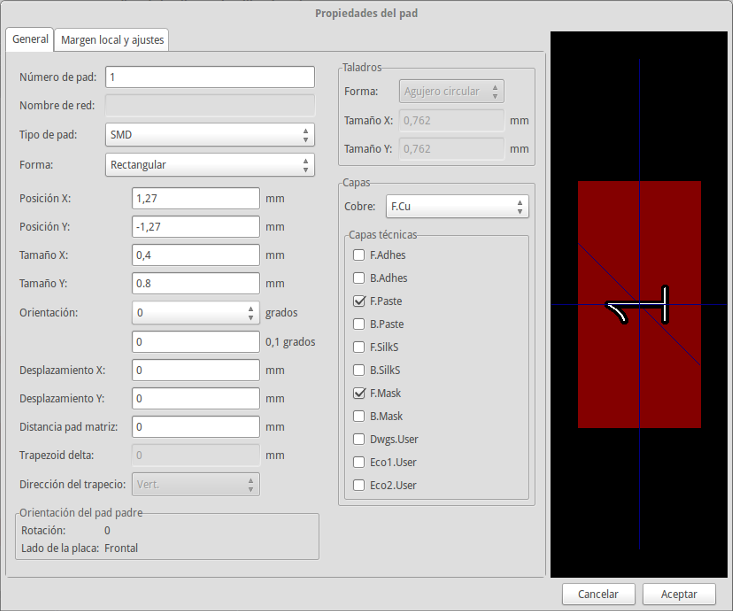
en la
barra de herramientas de la derecha. Haga clic en la hoja de trabajo para
colocar el pad. Haga clic derecho sobre el nuevo pad y haga clic en Editar
Pad. De lo contrario, puede utilizar la tecla de acceso directo e.
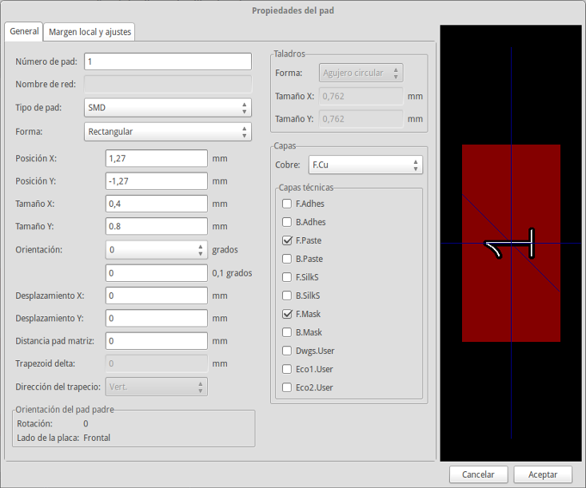 -
Ajuste el Número de Pad a 1, Forma del Pad a Rect, Tipo de Pad a SMD, Tamaño X a 0.4 y Tamaño Y a 0.8. Haga clic en Aceptar. Haga clic de nuevo en Añadir Pads y coloque dos pads más.
-
Si desea cambiar el tamaño de la rejilla, Clic derecho → Selección de Rejilla. Asegúrese de seleccionar el tamaño de la rejilla adecuado antes de que se situar los componentes.
-
Mueva la etiquetas MYCONN3 y SMD aparte para que se vea como la imagen se mostrada arriba.
-
Al colocar los pads a menudo es necesario medir distancias relativas. Coloque el cursor donde desee situar el punto de coordenada relativa (0,0) y pulse la barra espaciadora. Mientras se mueve el cursor, verá una indicación relativa de la posición del cursor en la parte inferior de la página. Pulse la barra espaciadora en cualquier momento para establecer el nuevo origen.
-
Ahora agregue un contorno para huella. Haga clic en el icono Añadir línea gráfica o polígono
 en
la barra de herramientas derecha. Dibuje un esquema del conector alrededor
del componente.
en
la barra de herramientas derecha. Dibuje un esquema del conector alrededor
del componente.
-
Haga clic en el icono Guardar Huella en Biblioteca Activa
en la barra de
herramientas superior, utilizando el nombre predeterminado MYCONN3.
8. Notas sobre portabilidad de los proyectos en KiCad
¿Qué archivos necesita enviar a alguien para que pueda cargar totalmente y utilizar su proyecto en KiCad?
Cuando quiere compartir un proyecto de KiCad con alguien, es importante que el archivo de esquema .Sch, el archivo de diseño de placa .Kicad_pcb, el archivo de proyecto .pro y el archivo netlist .Net, sean enviados junto con el fichero biblioteca de símbolos .lib y el archivo de biblioteca de huellas .kicad_mod. Sólo así la gente tendrá total libertad para modificar el esquema y la placa.
Junto con los esquemas de KiCad, la gente necesitará los archivos .lib que contienen los símbolos. Esos archivos de biblioteca necesitan ser cargados en las preferencias de Eeschema. Por otro lado, con las placas (Archivos .kicad_pcb), las huellas pueden ser almacenados dentro del archivo .kicad_pcb. Puede enviar a alguien un archivo .kicad_pcb y nada más, y todavía sería capaz de ver y editar la placa. Sin embargo, cuando quiera cargar los componentes desde un fichero netlist, las bibliotecas de componentes (.Archivos kicad_mod) tendrán que estar presentes y cargadas en las preferencias de Pcbnew al igual que para los esquemas. Además, es necesario cargar los archivos .kicad_mod en las preferencias de Pcbnew para que esas huellas aparezcan en Cvpcb.
Si alguien le envía un archivo .kicad_pcb con huellas que le gustaría utilizar en la otra placa, puede abrir el Editor de Huellas, cargar una huella de la placa actual, y guardar o exportar en otra biblioteca de componentes. También puede exportar todas las huellas de un archivo .kicad_pcb a la vez a través de Pcbnew → Archivo → Archivar → Huellas → Crear archivo huella, que creará un nuevo archivo .kicad_mod con todas las huellas de la placa.
En otras palabras, si lo único que desea distribuir es la PCB, entonces el fichero .kicad_pcb con la placa es suficiente. Sin embargo, si desea dar a la gente la capacidad completa para usar y modificar su esquema, sus componentes y la PCB, es muy recomendable que usted genere un zip y envíe el siguiente directorio del proyecto:
tutorial1/
|-- tutorial1.pro
|-- tutorial1.sch
|-- tutorial1.kicad_pcb
|-- tutorial1.net
|-- library/
| |-- myLib.lib
| |-- myOwnLib.lib
| \-- myQuickLib.lib
|
|-- myfootprint.pretty/
| \-- MYCONN3.kicad_mod
|
\-- gerber/
|-- ...
\-- ...
9. Mas sobre la documentación de KiCad
Esta es una guía rápida sobre la mayoría de las características de KiCad. Para obtener instrucciones más detalladas consulte los archivos de ayuda accesibles a través de cada módulo de KiCad. Haga clic en Ayuda → Manual.
KiCad viene con un buen conjunto de manuales en varios idiomas para sus cuatro componentes de software.
La versión en Inglés de todos los manuales KiCad se distribuyen con KiCad.
Además de sus manuales, KiCad se distribuye con este tutorial, que ha sido traducido a otros idiomas. Todas las diferentes versiones de este tutorial se distribuyen de forma gratuita con todas las versiones recientes de KiCad. Este tutorial, así como los manuales, deben empaquetarse con su versión de KiCad en su plataforma determinada.
Por ejemplo, en Linux las ubicaciones típicas son los siguientes directorios, dependiendo de su distribución exacta:
/usr/share/doc/kicad/help/en/ /usr/local/share/doc/kicad/help/en
En Windows se encuentran en:
<directorio de instalación>/share/doc/kicad/help/en
En OS X:
/Library/Application Support/kicad/help/en
9.1. Documentación de KiCad en la Web
La última versión de la documentación de KiCad está disponible en varios idiomas en la Web.